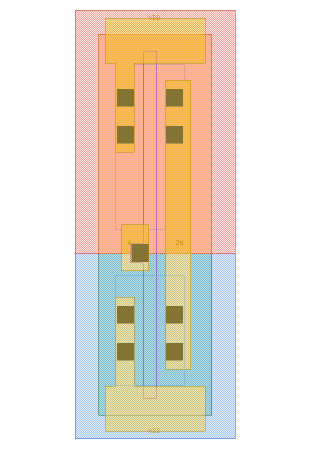
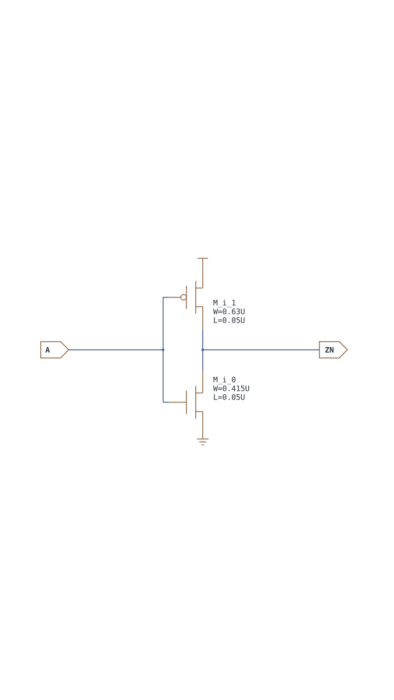
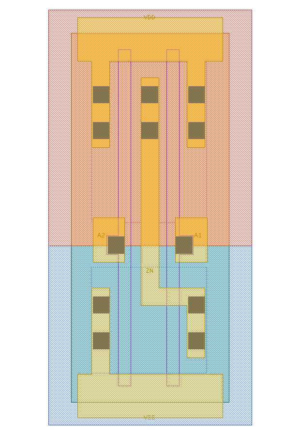
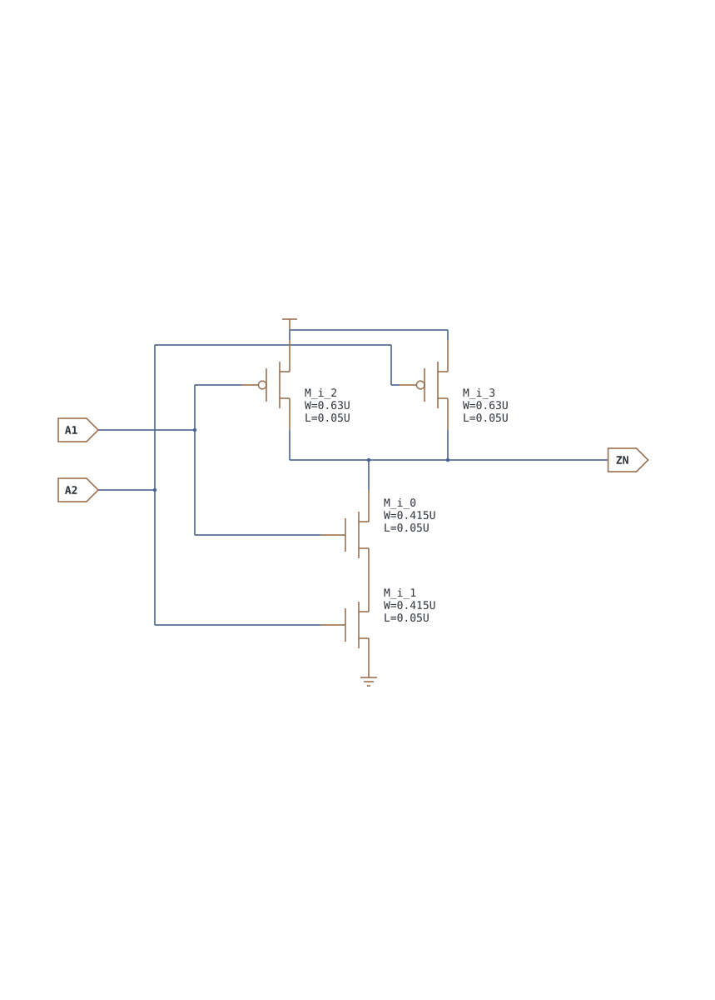
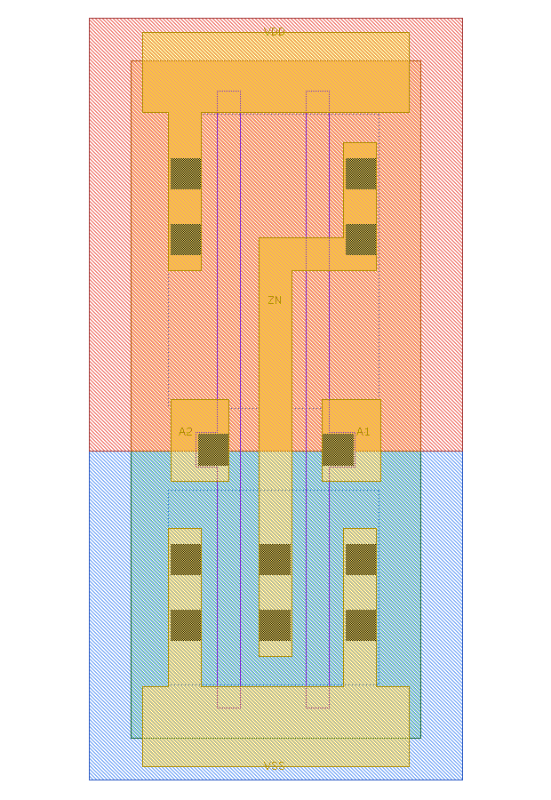
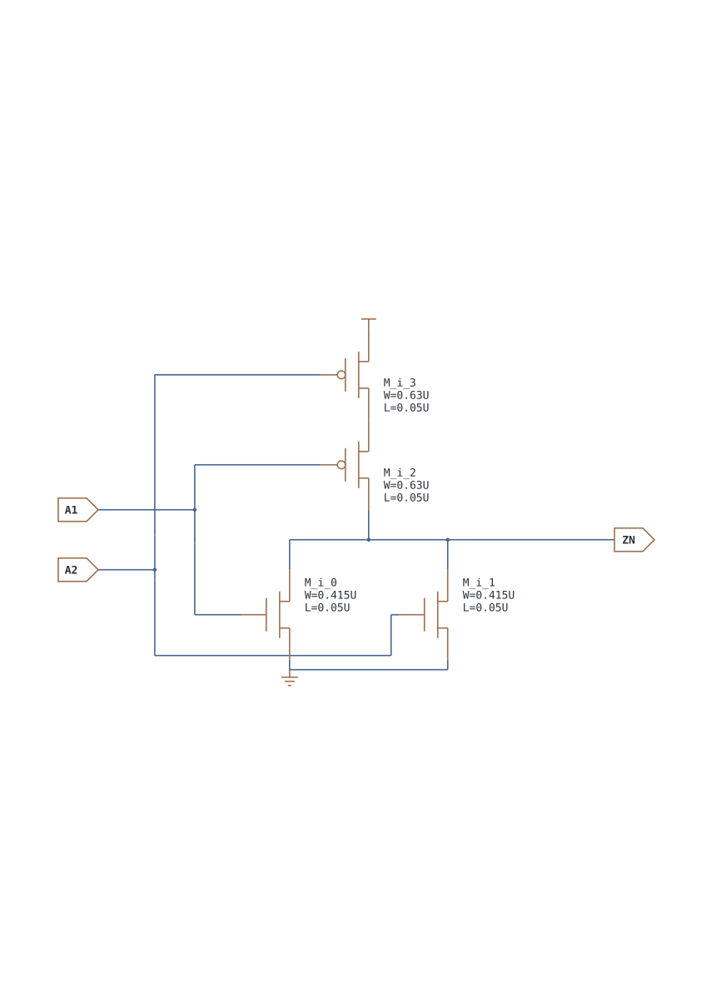
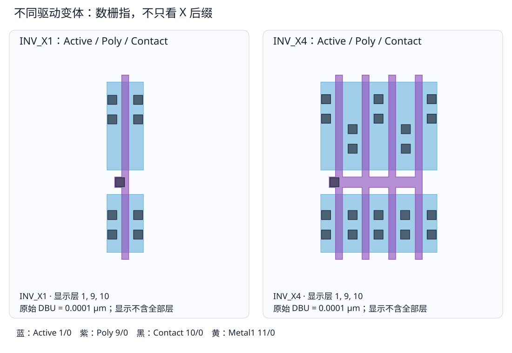

第 12 章 反相器、基本门与驱动强度
先把四个网络认清，再把串并联关系扩展到更多输入
本章以真实 Nangate/FreePDK45 INV_X1 为读图基准。下文的 CDL、截图和尺寸属于同一份库；它不是生成器 examples 中的 INVX1，也不是后续 Level-1 仿真用的 EDU_INV。
12.1 反相器：先把一只 PMOS 和一只 NMOS 看透
| 这一类解决什么 | 本库成员 | 常见应用 | 初学者易错点 |
|---|---|---|---|
| 翻转逻辑极性，并恢复为完整的 0/1 电平 | INV_X1/X2/X4/X8/X16/X32 | 低有效/高有效转换、生成互补控制、逻辑映射中的反相级 | INV 不是“没有代价的 NOT”；它有输入电容、延迟、短路功耗和输出负载上限 |
.SUBCKT INV_X1 A ZN VDD VSS
M_i_0 ZN A VSS VSS NMOS_VTL W=0.415U L=0.050U
M_i_1 ZN A VDD VDD PMOS_VTL W=0.630U L=0.050U| A | PMOS | NMOS | ZN |
|---|---|---|---|
| 0 | 导通 | 关断 | 1 |
| 1 | 关断 | 导通 | 0 |
{kind=link}

{kind=link}

版图里的 VDD/VSS 是上下横向 M1 电源轨；A 通过中部接触接到 Poly；ZN 通过右侧竖向 M1 同时接上下扩散。PMOS 的 W=0.630 μm 大于 NMOS 的 0.415 μm，是为了补偿迁移率差异、调整驱动和延迟；这不是“所有工艺都固定 1.5 倍”的公式。
功能解释与应用实例
| 场景 | 信号代入 | 为什么需要 INV |
|---|---|---|
| 复位极性转换 | reset = !reset_n | 外部接口给低有效复位，而某段组合逻辑使用高有效复位条件 |
| 生成互补选择 | SN = !S | 传输门或某些 MUX 拓扑需要 S/SN 成对控制；应关注两条控制路径的延迟差 |
| 恢复逻辑电平 | 弱或内部节点 → INV → 后级逻辑 | 反相级把有限斜率的内部节点重新驱动为接近电源轨的数字电平 |
| 综合映射 | n1=!(a·b)，再经 INV 得 a·b | AND 在静态 CMOS 中常由 NAND 核心加反相级组成 |
具体例子：设 reset_n=0，INV 输出 reset=1，表示复位条件成立；reset_n=1 时输出 0，电路离开复位。工程上不能只看逻辑正确：若这个输出同时驱动几百个寄存器，单个 INV_X1 的负载会过大，应由复位树、缓冲链和时序/转换时间约束共同决定实现。
12.2 驱动强度后缀不改变逻辑
_X1/_X2/_X4... 通常表示不同驱动能力。它可能通过增大 W、并联 finger、增加输出级或改变版图宽度实现，不能简单理解为“所有晶体管 W 乘后缀”。本库中：
- INV：X1/X2/X4/X8/X16/X32；BUF：X1/X2/X4/X8/X16/X32；
- AND/OR/NAND/NOR/AOI/OAI 多数为 X1/X2/X4；
- DFF/锁存/扫描触发器多数为 X1/X2；TBUF 为 X1/X2/X4/X8/X16；
CLKBUF_X3说明后缀不是必须为 2 的幂。
因此本章按基础单元族给真值/状态表；同族所有驱动变体都适用。版图、电容、延迟、功耗和晶体管数则必须逐 variant 检查。
为什么同一个功能要做很多尺寸
| 选择 | 好处 | 代价 | 更适合的情形 |
|---|---|---|---|
| 较小驱动（如 X1） | 面积、输入电容和漏电通常较小 | 带大负载时输出转换慢、延迟大 | 短线、少量门输入、非关键路径 |
| 较大驱动（如 X8/X16） | 能更快充放较大的线电容和门电容 | 自身面积、输入负载和动态/漏电代价增大 | 较长布线、较高扇出或时序关键节点 |
| 多级缓冲链 | 逐级放大，避免前级直接看到巨大的输入/线负载 | 增加级数、面积和每级延迟 | 一处信号驱动很多寄存器或跨较长距离 |
| CLKBUF | 针对时钟转换、负载和上/下沿特性进行表征 | 不一定允许当普通数据缓冲器使用 | CTS 构造时钟树；具体用途以 Liberty 属性为准 |
具体例子：一个控制门要驱动分散在版图上的 32 个 DFF 输入。直接把 X1 换成“库里最大单元”不一定最优，因为大单元会反过来加重前一级负载。后端优化通常结合实际布线寄生，选择 X1→X4→X16 一类渐增链，或复制驱动器形成分支；尺寸与级数要靠静态时序分析和 slew/capacitance 限制验证。
12.3 基本组合门：AND/NAND 与 OR/NOR
| 这一类解决什么 | 本库成员举例 | 常见应用 | 版图/时序特征 |
|---|---|---|---|
| 全部条件同时成立 | AND2/3/4、NAND2/3/4 | 握手、使能、地址译码、全 1 检测 | NAND 的 NMOS 串联；扇入越大，堆叠路径通常越难驱动 |
| 至少一个条件成立 | OR2/3/4、NOR2/3/4 | 中断/错误汇总、请求汇总、全 0 检测 | NOR 的 PMOS 串联；宽扇入也会带来延迟与面积代价 |
二输入完整真值表
| A1 | A2 | AND | NAND | OR | NOR |
|---|---|---|---|---|---|
| 0 | 0 | 0 | 1 | 0 | 1 |
| 0 | 1 | 0 | 1 | 1 | 0 |
| 1 | 0 | 0 | 1 | 1 | 0 |
| 1 | 1 | 1 | 0 | 1 | 0 |
2/3/4 输入族的完整压缩表
| 适用单元 | 输入条件 | 输出 |
|---|---|---|
| AND2、AND3、AND4 | 全部输入为 1 | 1 |
| AND2、AND3、AND4 | 至少一个输入为 0 | 0 |
| NAND2、NAND3、NAND4 | 全部输入为 1 | 0 |
| NAND2、NAND3、NAND4 | 至少一个输入为 0 | 1 |
| OR2、OR3、OR4 | 至少一个输入为 1 | 1 |
| OR2、OR3、OR4 | 全部输入为 0 | 0 |
| NOR2、NOR3、NOR4 | 至少一个输入为 1 | 0 |
| NOR2、NOR3、NOR4 | 全部输入为 0 | 1 |
压缩表穷尽了 n 输入的所有情况：例如“至少一个为 0”覆盖除全 1 之外的所有行。NAND 的 NMOS 下拉串联、PMOS 上拉并联；NOR 正好相反。AND/OR 在本库中由 NAND/NOR 核心再接反相输出级，因此版图和晶体管数更大。
同一类单元的多个工程例子
| 目标 | 方程 | 可对应的单元 | 信号解释 |
|---|---|---|---|
| 握手成功 | fire=valid·ready | AND2 | 数据有效并且接收端准备好时，才允许本周期传输 |
| 低有效片选 | cs_n=!(addr_hit·enable) | NAND2 | 地址命中且总使能打开时，低有效片选被拉低 |
| 三个条件全部满足 | start=power_ok·pll_lock·cfg_done | AND3 | 电源、时钟和配置都准备好后启动 |
| 错误汇总 | any_err=e0+e1+e2+e3 | OR4 | 任一错误源有效就报告总错误 |
| 总线空闲检测 | idle=!(req0+req1+req2) | NOR3 | 所有请求均为 0 时 idle 才为 1 |
| 低有效“并非全授权” | all_grant_n=!(g0·g1·g2·g3) | NAND4 | 只要有一路未授权，输出就保持 1 |
德摩根律说明 !(A·B)=!A+!B、!(A+B)=!A·!B。因此综合器会结合信号已有极性，把逻辑映射成 NAND/NOR/AOI/OAI，而不一定照 RTL 表面写法使用 AND/OR。也不要从输出名 Z 或 ZN 猜极性；本章始终以 CDL 方程、Liberty function 或仿真为准。
{kind=link}

{kind=link}

{kind=link}

{kind=link}

12.4 把 NAND 的一个输入翻转，观察另一个输入在做什么
考虑 ZN=!(A1·A2)。把 A2 固定为 1，令 A1 从 0 变 1：原来一支 PMOS 把 ZN 拉高；A1 上升后，对应 PMOS 关断、NMOS 导通，下拉串联路径完整，ZN 才下降。这时 A1→ZN 路径被敏化，也就是其他输入已设置成允许这一输入影响输出的状态。
若把 A2 固定为 0，即使 A1 翻转，另一个 NMOS 仍关断且另一支 PMOS 仍上拉，ZN 应保持 1。这不是“门坏了”，而是选错了测量条件。以后看到表征软件说“不翻转”，先问测试的那条弧是否被敏化。
| 门 | 测 A1→输出时其他输入 | A1↑ 导致 | 为什么 |
|---|---|---|---|
| NAND2 / NAND3 / NAND4 | 其余全部置 1 | ZN↓ | 其余串联 NMOS 已打开；A1 决定最后的通断 |
| NOR2 / NOR3 / NOR4 | 其余全部置 0 | ZN↓ | 其他并联下拉支路都关断，避免输出先被拉低 |
| AND / OR | 沿用其 NAND/NOR 核心的敏化设置 | 输出↑ | 后级再次反相，输出与输入同向；本库这些门的输出名仍可为 ZN，不能凭名字判断极性 |
12.5 共享扩散的三种证据，不把 Contact 当作切刀
NAND2 下拉网络的内部节点是两只 NMOS 的连接处。在版图中，若两根栅之间是一段连续 Active，它可以直接承担这个内部节点，不需要先引到 M1 再接回去。Contact 可落在共享段上把节点引出，但不会把连续扩散分成两网。
- 逻辑上允许：CDL 两个相邻端点是同一个网络。
- 物理上发生：相邻栅之间的扩散连续，器件类型/井/注入兼容，没有扩散断开。
- 连接是正确的：所有 Contact/M1 都接在应接的网上，没有把共享内部节点短到电源或输出。
并联管也可能共享扩散。例如用 VSS—A1—ZN—A2—VSS 的扩散序列构造并联 NMOS，中间共享 ZN，左右 VSS 再由金属并起来。是否串联/并联看最终网的连接，不看栅条是否排成一列。
12.6 从 INV_X1 到 INV_X4：指、宽度与输入负担

第一遍只数 Active×Poly 的交叠，第二遍恢复 M1，确认多个指的栅都接 A、源漏两组分别接到电源和 ZN。只有端子网络满足并联关系，才能把多个指的 W 相加；两只串联管不是一个更宽的管。CDL 可能已把若干并联指归并成一行，所以版图交叠数不一定等于 CDL 的行数。
较大输出级通常能更快给同样负载充放电，但它的栅也更大：前一级需要驱动更多输入电容。尺寸优化应比较整条路径 前级 → 当前门 → 负载，不能只盯当前门输出更快。更宽还可能增加扩散电容、布线长度和漏电，最终以提取与表征为准。
12.7 逻辑应用要把“输入已经同步”写成前提
本章的 start=power_ok·pll_lock·cfg_done 用来解释 AND3 的功能，不表示把三个异步模拟/时钟域信号直接相与就可安全驱动寄存器。真实设计还需要同步、毛刺处理和复位/时序约束。类似地，用 INV 改复位极性不自动完成复位释放同步。学标准单元功能时应把“组合逻辑正确”和“系统时序安全”分开。
- 测 NAND3 的 A2 输入弧，A1/A3 应设多少？给出输出上升所需的输入边沿。
- 两个 NMOS 的共同端叫 net_0，网表是否足以证明已经扩散共享？
- 为什么把 X1 换成 X4 后，整条路径可能反而变慢？
参考答案
① A1=A3=1，A2 从 1 降为 0 时下拉被切断、对应 PMOS 打开，输出上升。② 不足，只有共享机会；还需要 GDS 连续扩散与正确网络证据。③ 前级驱动更大的输入电容，新增的前级延迟可能超过当前级省下的时间，也可能因布线变化增加负担。